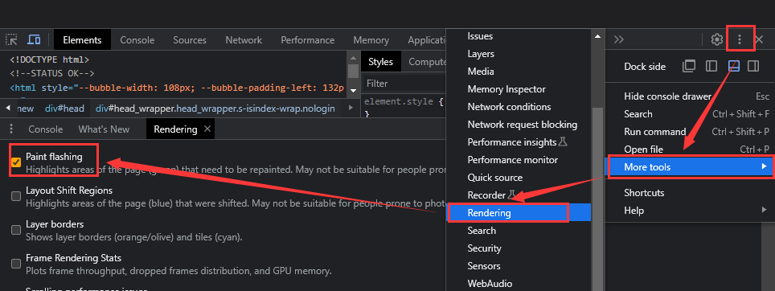
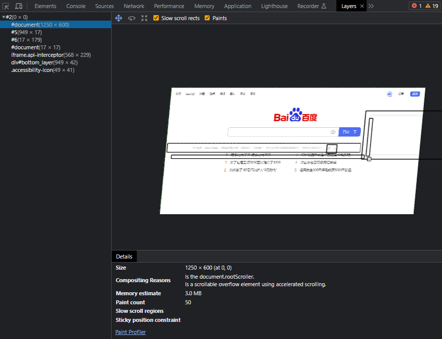

如果把浏览器呈现页面的整个过程一分为二，前面讨论的的诸如图像资源优化、加载优化，以及构建中如何压缩资源大小等，都可视为浏览器为呈现页面请求所需资源的部分，本章主要关注浏览器获取资源后，进行渲染部分的相关优化内容。
页面渲染性能
- 流畅的使用体验
网站页面要快速加载出来，而且运行过程也应更顺畅。
那么要达到在怎样的性能指标，才能满足用户流畅的使用体验呢？
目前大部分设备的屏幕分辨率都在 60fps 左右，也就是每秒刷新 60 次，所以要满足用户的体验期望，就需要浏览器在渲染页面动画或响应用户操作时，每一帧的生成速率尽量接近屏幕的刷新率。
若按照 60fps 来算，则留给每一帧画面的时间不到 17ms，再除去浏览器对资源的一些整理工作，一帧画面的渲染应尽量再 10ms 内完成，如果达不到要求而导致帧率下降，则屏幕上的内容会发生抖动或卡顿。
- 渲染过程
为了使每一帧页面渲染的开销都能在期望的时间范围内完成，就需要开发者了解渲染过程的每个阶段，以及各个阶段有哪些优化空间是我们力能所及的，
经过分析根据开发者对优化渲染过程的控制力度，可以大体将其划分为五个部分：
JavaScript 处理、计算样式、页面布局、绘制、合成
JavaScript 处理： 前端项目中经常会需要响应用户操作，通过 JavaScript 对数据集进行计算、操作 DOM 元素，并展示动画等视觉效果。当然对于动画的实现，除了 JavaScript，也可以考虑使用如 CSS Animations、Transitions 等技术。
计算样式： 在解析 CSS 文件后，浏览器需要根据各种选择器去匹配所要应用 CSS 规则的元素节点，然后计算出每个元素的最终样式。
页面布局： 指的是浏览器在计算完样式后，会对每个元素尺寸大小和屏幕位置进行计算。由于每个元素都可能会受到其他元素的影响，并且位于 DOM 树形结构中子节点元素，总会受到父级元素修改的影响，所以页面布局的计算会经常发生。
绘制： 在页面布局确定后，接下来便可以绘制元素的可视内容，包括颜色、边框、阴影及文本和图像。
合成： 通常由于页面中的不同部分可能被绘制在多个图层上，所以在绘制完成后需要将多个图层按照正确的顺序在屏幕上合成，以便最终正确地渲染出来。
这个过程中的每一个阶段都可能产生卡顿，
这里值得说明的是： 并非对于每一帧画面都会经历这五个部分，比如仅修改与绘制相关的属性（文字颜色、背景图片或边缘阴影等），而未对页面布局产生任何修改，那么在计算样式阶段完成后，便会跳过页面布局直接执行绘制。
如果所更改的属性既不影响页面布局又不需要重新绘制，便可直接跳过合成阶段执行。
具体修改哪些属性会触发页面布局、绘制或合成阶段的执行，这与浏览器的内核类型存在一定关系，
- 不同内核浏览器的 CSS 属性触发差异
| 属性 | Blink | Gecko | Webkit |
|---|---|---|---|
| z-index | 绘制/合成 | 绘制/合成 | 布局/绘制/合成 |
| transform | 合成 | 合成 | 布局/绘制/合成 |
| opacity | 绘制/合成 | 合成 | 布局/绘制/合成 |
| min-width | 布局/绘制/合成 | 布局/合成 | 布局/绘制/合成 |
| color | 布局/绘制 | 布局/绘制 | 布局/绘制/合成 |
| background | 布局/绘制 | 布局/绘制 | 布局/绘制/合成 |
| border-radius | 布局/绘制 | 布局/绘制 | 布局/绘制/合成 |
| border-style | 布局/绘制/合成 | 布局/绘制/合成 | 布局/绘制/合成 |
| border-width | 布局/绘制/合成 | 布局/绘制/合成 | 布局/绘制/合成 |
JavaScript 执行优化
- 实现动画效果
利用 JavaScript 通常最容易想到的方式是 setTimeout 或 setInterval 来实现，
实践经验告诉我们，使用定时器实现的动画会在一些低端机器上出现抖动或者卡顿的现象，这主要是因为浏览器无法确定定时器的回调函数的执行时机。
以 setInterval 为例，其创建后回调任务被放入异步队列，只有当主线程上的任务执行完成后，浏览器才会去检查队列中是否有等待需要执行的任务，如果有就从任务队列中取出执行，这样会使任务的实际执行时机比所设定的延迟时间要晚一些。
其次屏幕分辨率和尺寸也会影响刷新频率，不同设备的屏幕绘制频率可能会有所不同，
setInterval 只能设置某个固定的时间间隔，这个间隔时间不一定与所有屏幕的刷新时间同步，那么导致动画随机丢帧也在所难免。
为了避免这种动画实现方案中因丢帧而造成的卡顿现象，推荐使用 requestAnimationFrame 方法。
与 setInterval 相比，其最大的优势是将回调函数的执行时机交由系统来决定，即如果屏幕刷新的频率是 60Hz，则它的回调函数大约会每 16.7ms 执行一次，如果屏幕的刷新屏幕是 75Hz，则它的回调函数大约会每 13.3ms 执行一次，也就是说 requestAnimationFrame 方法的执行时机与系统刷新频率同步。
这样能保证回调函数在屏幕的每次刷新间隔中只被执行一次，从而避免因随机丢帧而造成的卡顿现象。
let start;
// 定义目标动画元素
const element = document.getElementById("MyAnimate");
element.style.position = "absolute";
function updateScreen(timestamp) {
if (!start) start = timestamp;
// 根据时间戳计算每次动画位移
const progress = timestamp - start;
element.style.left = `${Math.min(progress / 10, 200)}px`;
if (progress < 2000) requestAnimationFrame(updateScreen);
}
// 启动动画回调函数
requestAnimationFrame(updateScreen);
当创建 setInterval 定时器后，除非显示地调用 clearInterval 去销毁该定时器，不然在后台的动画任务会被不断执行。而 requestAnimationFrame 方法则完全不同，当页面未被激活，屏幕刷新任务会被系统暂停。只有当页面激活，动画任务才会被激活并从上次暂停的地方继续执行，所以能有效地节省 CPU 开销。
- 恰当使用 web Worker
web Worker 为 JavaScript 提供多线程环境，主线程通过创建 Worker 子线程，可以分担一部分自己的任务执行压力。
在 Worker 子线程上执行的任务不会干扰主线程，待其上的任务执行完成后，会把结果返回给主线程。
注意： Worker 子线程一旦创建成功就会始终执行，不会被主线程上的事件打断，所以 Worker 子线程一旦使用完毕就应该及时关闭。
Worker 的使用注意：
- DOM 限制：Worker 无法读取主线程所处理网页的 DOM 对象，也无法使用 document、window、parent 等对象，只能访问 navigator 和 location 对象。
- 文件读取限制：Worker 子线程无法访问本地文件系统，这就要求所加载的脚本来自网络。
- 通信限制：主线程和 Worker 子线程不在同一个上下文内，所以它们无法直接进行通信，只能通过消息来完成。
- 脚本执行限制：虽然 Worker 可以用过
XMLHTTPRequest对象发起 ajax 请求，但不能使用alert()方法和confirm()方法在页面弹出提示。 - 同源限制：Worker 子线程执行的代码文件需要与主线程的代码文件同源。
在主线程中通过调用 worker.terminate() 方法来关闭，在子线程中通过调用自身全局对象中的 self.close() 方法来关闭。
考虑到关于 Worker 使用中的限制，并非所有任务都适合用这种方式处理来提升性能，如果所要处理的任务必须要放在主线程上完成，则应当考虑将一个大型任务拆分为多个微任务，每个微任务处理的耗时最好在几毫秒之内，能在每帧的 requestAnimationFrame 更新方法中处理完成。
// 将一个大型任务拆分为多个微任务
const taskList = splitTask(BigTask);
// 微任务处理逻辑，参数为每次起始时间戳
function processTaskList(taskStartTime) {
let taskFinishTime;
do {
// 从任务堆栈中推出要处理的下一个任务
const nextTask = taskList.pop();
// 处理下一个任务
processTask(nextTask);
// 获取任务执行完成的时间，如果时间够 3毫秒就继续执行
taskFinishTime = window.performance.now();
} while (taskFinishTime - taskStartTime < 3);
// 如果任务堆栈不为空则继续
if (taskList.length > 0) {
requestAnimationFrame(processTaskList);
}
}
requestAnimationFrame(processTaskList);
应用实例：
- 假设你有一个需要处理的大型数据集，例如一个包含 10000 个元素的数组。你希望在处理过程中保持用户界面的响应性，而不让它在处理期间冻结。你可以使用这段代码将大任务拆分为多个微任务，并在每个微任务中处理一部分数据。
// 假设你有一个包含10000个元素的数组
const bigData = Array.from({ length: 10000 }, (_, index) => index + 1);
// 将大任务拆分为每次处理100个元素的微任务
const taskList = splitTask(bigData, 100);
// 微任务处理逻辑，参数为每次起始索引
function processTaskList(startIndex) {
const endIndex = Math.min(startIndex + 100, bigData.length);
for (let i = startIndex; i < endIndex; i++) {
// 处理当前索引对应的元素
processElement(bigData[i]);
}
// 如果还有剩余的元素需要处理，则继续下一个微任务
if (endIndex < bigData.length) {
requestAnimationFrame(() => processTaskList(endIndex));
}
}
// 开始处理任务
requestAnimationFrame(() => processTaskList(0));
- 事件节流和事件防抖
页面交互过程中，势必有一些操作会被频繁触发，如滚动页面触发 scroll 事件，页面缩放触发的 resize 事件，鼠标涉及的 mousemove、mouseover 等事件，以及键盘涉及的 keyup、keydown 等事件。
频繁触发这些事件会导致相应回调函数的大量计算，进而引发页面的抖动甚至卡顿。
事件节流，简单来说就是某段时间内，无论触发多少次回调，在计时结束后都只响应第一次的触发。
function throttle(time, callback) {
// 上次触发回调的时间
let last = 0;
// 事件节流操作的闭包返回
return (params) => {
// 记录本次回调触发的时间
let now = Number(new Date());
// 判断事件触发时间是否超出节流时间间隔
if (now - last >= time) {
// 如果超出节流时间间隔，则触发相应回调函数
callback(params);
}
};
}
const throttle_scroll = throttle(1000, () => console.log("页面滚动"));
document.addEventListener("scroll", throttle_scroll);
事件防抖： 只是所响应的触发事件是最后一次事件。
function debounce(time, callback) {
let timer = null;
return (params) => {
if (timer) clearTimeout(timer);
// 设置新的定时器
timer = setTimeout(() => callback(params), time);
};
}
const debounce_scroll = debounce(1000, () => console.log("页面滚动"));
document.addEventListener("scroll", debounce_scroll);
虽然通过上述事件防抖操作，可以有效的避免在规定时间内频繁的触发事件回调函数，但是如果用户操作过于频繁，每次都在防抖定时器结束之前就进行了下一次操作，那么同一事件所要触发的回调函数将会被无限延迟。频繁延迟会让用户迟迟得不到响应，同样也会造成页面卡顿的使用体验。
所以我们需要为事件防抖设置一条延迟等待的时间底线，在延迟时间内可以重新生成定时器，但只要延迟时间到了就必须对用户之前的操作做出响应，
结合事件节流的思想提供了一个升级版的实现方式：
function throttle_pro(time, callback) {
let last = 0,
timer = null;
return (params) => {
// 记录本次回调触发的时间
let now = Number(new Date());
// 判断事件触发时间是否超出节流时间间隔
if (now - last < time) {
// 若在所设置的延迟时间间隔内，则重新设置防抖定时器
clearTimeout(timer);
timer = setTimeout(() => {
last = now;
callback(params);
}, time);
} else {
// 若超出延迟时间，则直接响应用户操作，不用等待
last = now;
callback(params);
}
};
}
// 结合节流与防抖优化后的事件回调函数
const scroll_pro = throttle_pro(1000, () => console.log("页面滚动"));
document.addEventListener("scroll", scroll_pro);
- 恰当的 JavaScript 优化
以上的优化方法带来的性能优化是有限的，主要还是利用浏览器的 Performance 去分析处理。
计算样式优化
- 减少要计算样式的元素数量
重要机制： CSS 引擎在查找样式表时，对每条规则的匹配顺序是从右往左的，
如下：
.product-list li {
}
CSS 引擎需要首先遍历页面上的所有的 li 标签元素，然后确认每个 li 标签有包含类名为 product-list 的父元素才是目标元素。
所以为了提高页面的渲染性能，计算阶段应当尽量减少参与样式计算的元素数量。
对于上面的 li 的错误示范，可以直接给 li 添加一个类名，通过类名去查找元素。
在 CSS 选择器中，标签选择器的区分度是最低的。
避免使用通配符做选择器
- 浏览器需要去遍历页面中的每一个元素，性能开销很大，应该避免使用。
* {
margin: 0;
padding: 0;
/* ... */
}
- 降低选择器的复杂性
.container:nth-last-child(-n + 1) .content {
/* 样式属性 */
}
首相就需要查询有哪些应用了 content 类的元素，并且其父元素恰好带有 container 类的倒数第 n + 1 个元素，这个计算过程就会花费许多时间，如果仅对确定的元素使用单一的类名选择器，那么浏览器的计算开销会大幅降低。
比如使用类名 final-container-content 的类选择替代上述的复杂样式计算。
通过 id 选择器已经可以唯一确定元素了，就无须再附加其他多余的选择器，
/* 错误示范 */
.content #my-content {
}
/* 正确方式 */
#my-content {
}
- 使用 BEM 规范
BEM 是一种 CSS 的书写规范，它的名称是由三个单词的首字母组成的，分别是块(Block)、元素(Element)、修饰符(Modifier)。
块
凡是独立的页面元素，无论简单或是复杂都可以被视为一个块，在文档中会用一个唯一的类名来表示这个块。
具体的命名规则包括三个：只能使用类选择器，而不使用 ID 选择器；每个块定义一个前缀用来表示命名空间；每条样式规则必须属于一个块。
比如一个自定义列表就可视为一个块，
.mylist {
}
元素
元素指块中的子元素，其类名需要使用块的名称作为前缀，
/* 常规写法 */
.mylist {
}
.mylist .item {
}
/* BEM写法 */
.mylist {
}
.mylist__item {
}
修饰符
修饰符可以看作是块或元素的某个特定状态，以按钮为例，它可能包含大、中、小三种默认尺寸及自定义尺寸，对于可使用 small、normal、big 或 size-N 来修饰具体按钮的选择器类名，示例如下：
.mylist__item__big {
}
.mylist__item__normal {
}
.mylist__item__small {
}
.mylist__item__size-10 {
}
页面布局与重绘的优化
页面布局也叫作重排和回流，指的是浏览器对页面元素的几何属性进行计算并将最终结果绘制出来的过程。
凡是元素的宽高尺寸、在页面中的位置及隐藏或显示等信息发生改变时，都会触发页面的重新布局。
通常页面布局的作用范围会涉及整个文档，所以这个环节会带来大量的性能开销，
我们在开发过程中，应当从代码层面触发，尽量避免页面布局或最小化其处理次数。
如果仅修改了 DOM 元素的样式，而未影响其几何属性时，则浏览器会跳过页面布局的计算环节，直接进入重绘阶段。
虽然重绘的性能开销不及页面布局高，但为了更高的性能体验，也应当降低重绘发生的频率和复杂度。
- 触发页面布局与重绘的操作
能触发页面布局与重绘的操作大致可以分为三类：
- 首先就是对 DOM 元素的几何属性的修改，这些属性包括
width、height、padding、margin、left、top等，某元素的这些属性发生变化时，便会波及与它相关的所有节点元素进行几何属性的重新计算，这会带来巨大的计算量， - 其次，是更改 DOM 树结构，浏览器进行页面布局时的计算顺序，可类比树的前序遍历，即从上向下、从左到右。这里对 DOM 树节点的增、删、移动等操作，只会影响当前节点后的所有节点元素，而不会再次影响前面已经遍历过的元素；
- 最后，是获取某些特定的属性值操作，不如页面可见区域宽高
offsetWidth、offsetHeight，页面视窗中元素与视窗边界的距离offsetTop、offsetLeft，类似的属性值还有scrollTop、scrollLeft、scrollWidth、scrollHeight、clientTop、clientWidth、clientHeight及调用window.getComputedStyle方法。
这些属性和方法有一个共性，就是需要通过即时计算得到，所以浏览器就需要重新进行页面布局计算。
- 避免对样式的频繁改动
在通常情况下，页面的一帧内容被渲染到屏幕上会按照如下顺序依次进行，
执行 JavaScript 代码 -> 样式计算 -> 页面布局 -> 绘制 -> 合成
如果在 JavaScript 运行阶段涉及上述三类操作，浏览器就会强制提前页面布局的执行，为了尽量降低页面布局计算带来的性能损耗，我们应当避免使用 JavaScript 对样式进行频繁的修改。
如果一定要修改样式，则可通过以下几种方式来降低触发重排或回流的频次。
使用类名对样式逐条修改：
在 JavaScript 代码中逐行执行对元素样式的修改，是一种糟糕的编码方式，错误代码示范如下：
// 获取 DOM 元素逐行修改样式
const div = document.getElementById("mydiv");
div.style.height = "100px";
div.style.width = "100px";
div.style.border = "2px solid blue";
上面的代码，每行都会触发一次对渲染树的更改，于是会导致页面布局重新计算而带来巨大的性能开销。
合理的做法是将多行的样式修改合并到一个类名中，仅在 JavaScript 脚本中添加或更改类名即可。
.my-div {
height: 100px;
width: 100px;
border: 2px solid blue;
}
然后统一在 JavaScript 中通过给指定元素添加类的方式一次完成，这样可避免触发多次对页面布局的重新计算。
const div = document.getElementById("mydiv");
div.classList.add("my-div");
缓存对敏感属性值的计算
比如，
const list = document.getElementById("list");
for (let i = 0; i < 10; i++) {
list.style.top = `${list.offsetTop + 10}px`;
list.style.left = `${list.offsetLeft + 10}px`;
}
这不但在赋值环节会触发页面布局的重新计算，而且取值涉及即时敏感属性的获取，如 offsetTop、offsetLeft，也会触发页面布局的重新计算。
这样的性能是非常糟糕的，作为优化我们可以将敏感属性通过变量的形式缓存起来，等计算完成后再统一进行赋值触发布局重排。
const list = document.getElementById("list");
// 将敏感属性缓存起来
let offsetTop = list.offsetTop,
offsetLeft = list.offsetLeft;
for (let i = 0; i < 10; i++) {
offsetTop += 10;
offsetLeft += 10;
}
// 计算完成后统一赋值触发重排
list.style.top = offsetTop;
list.style.left = offsetLeft;
使用 requestAnimationFrame 方法控制渲染帧
requestAnimationFrame 方法可以控制回调在两个渲染帧之间仅触发一次，如果在其回调函数中一开始就取值到即时敏感属性，其实获取的是上一帧布局的值，并不会触发页面布局的重新计算。
// 在帧开始时触发回调
requestAnimationFrame(queryDivHeight);
function queryDivHeight() {
const div = document.getElementById("div");
console.log(div.offsetHeight);
}
如果在请求此元素高度之前更改其样式，浏览器就无法直接使用上一帧的旧有属性值，而需要先应用更改的样式，再运行页面布局计算后，才能返回所需的正确高度值。
这样多余的开销显然是没有必要的，因此考虑到性能因素，在 requestAnimationFrame 方法的回调函数中，应始终优先样式的读取，然后再执行相应的写操作：
// requestAnimationFrame 的回调函数
function queryDivHeight() {
const div = document.getElementById("div");
// 获取并在命令行汇总打印出指定 div 元素的高
console.log(div.offsetHeight);
// 样式的写操作应放在读取操作后进行
div.classList.add("my-div");
}
- 通过工具对绘制进行评估
监控渲染信息
打开 Chrome 的开发者工具，可以在 “设置” -> “更多工具”，发现许多很实用的性能辅助小工具，比如监控渲染的 Rendering 工具，

首先选择 Paint flashing，当开启此功能，操作页面发生重新渲染，Chrome 会让重绘区域进行一次绿色闪动。
这样就可以通过观察闪动区域来判断是否存在多余的绘制开销，比如若仅单击 Select 组件弹出下拉列表框，却发现整个屏幕区域都发生了闪动，或与此操作组件的无关区域发生了闪动，这都意味着有多余的绘制开销存在，需要进一步研究与优化。
Layer borders 功能开启，会在页面上显示出绘制的图层边界。
FPS meter 功能开启后，会在当前页面的左上角显示实时的帧率情况，GPU 功能是否开启及 GPU 内存占用情况。
查看图层详情
当我们通过 Rendering 工具发现存在有多余的图层渲染时，由于闪动是难以捕捉的，所以还需要工具辅助显示出各个图层的详细信息，这便需要用到 Layers 图层工具，

通过这些信息能够帮助我们快速定位到所要查看的图层信息，当我们使用 Rendering 工具监控页面交互过程中有不恰当的图层存在时，便可使用 Layers 工具进行问题复现：首先打开目标页面，然后从左侧图层列表中依次查找出问题图层，接着分析引起该图层发生重绘的原因。
- 降低绘制复杂度
绘制是在页面布局确定后，将元素的可视内容绘制到屏幕上的过程。
虽然不同的 CSS 绘制样式看不出性能上明显的不同，但并非所有属性都有同样的性能开销。
例如，绘制带有阴影效果的元素内容，就会比仅绘制单边边框所耗费的时间要长，因为涉及模糊就意味着更高的复杂度。
CSS 属性如下：
/* 绘制时间相对较短的边框颜色 */
border-color: red;
/* 绘制时间更长的阴影内容 */
box-shadow: 0 8px rgba(255, 0, 0, 0.5);
使用之前介绍过的渲染性能分析工具，发现了有明显性能瓶颈需要优化时，需要确认是否存在高复杂度的绘制内容，可以使用其他实现方式来替换以降低绘制的复杂度。
比如位图的阴影效果，可以考虑使用 PS 等图像处理工具直接为图片本身添加阴影效果，而非全交给 CSS 样式去处理。
此外，还要注意对绘制区域的控制，对不需要重新绘制的区域应尽量避免重绘。
例如，页面的顶部有一个固定的 header 标头，若它与页面其他位置的某个区域位于同一图层，当后者发生重绘时，就有可能触发包括固定标头区域在内的整个页面的重绘，对于固定不变不期望发生重绘的区域，建议可以将其提升为独立的绘图层，避免被其他区域的重绘连带着触发重绘。
合成处理
合成处理时将已绘制的不同图层放在一起，最终在屏幕上渲染出来的过程。
在这个环节中，有两个因素可能会影响页面性能：一个是所需合成的图层数量，另一个是实现动画的相关属性。
新增图层
可通过将固定区域和动画区域拆分到不同图层上进行绘制，来达到绘制区域最小化的目的。
如何新建图层？
最佳方式便是使用 CSS 属性 will-change 来创建：
.new-layer {
will-change: transform;
}
该方法在 Chrome、Firefox、Opera 上均有效，而对 Safari 等不支持 will-change 属性的浏览器，则可以使用 3D 变换来强制创建：
.new-layer {
transform: translate(0);
}
虽然创建新的图层能够在一定程度上减少绘制区域，但也应当注意不能创建太多的图层，因为每个图层都需要浏览器为其分配内存及管理开销。
如果已经将一个元素提升到所创建的新图层上，也最好使用 Chrome 开发者工具中的 Layers 对图层详情进行评估，确定是否真的带来了性能提升，切忌在未经分析评估前就盲目地进行图层创建。
仅与合成相关的动画属性
如果一个动画的实现不经过页面布局或重绘环节，仅在合成处理阶段就能完成，则将会节省大量的性能开销。
目前能够符合这一要求的动画属性只有两个：opacity、transform。
- 仅合成阶段可实现的动画效果
| 动画效果 | 实现方式 |
|---|---|
| 位移 | transform: translate(npx, npx) |
| 缩放 | transform: scale(n) |
| 旋转 | transform: rotate(ndeg) |
| 倾斜 | transform: skew(ndeg) |
| 矩阵变换 | transform: matrix(3d) |
| 透明度 | opacity: 0~1 |
在使用 opacity 和 transform 实现相应的动画效果时，需要注意动画元素应当位于独立的绘图层上，以避免影响其他绘制区域，这就需要将动画元素提升至一个新的绘图层。